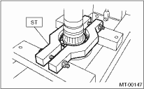

MANUAL TRANSMISSION AND DIFFERENTIAL(5MT) > Center Differential
1. Remove the ball bearing using ST.
NOTE:
Do not reuse the ball bearing.
| ST 498077300 | CENTER DIFFERENTIAL BEARING REMOVER |

2. Aside from the ball bearings, the center differential is a non-disassembly part and must not be disassembled.